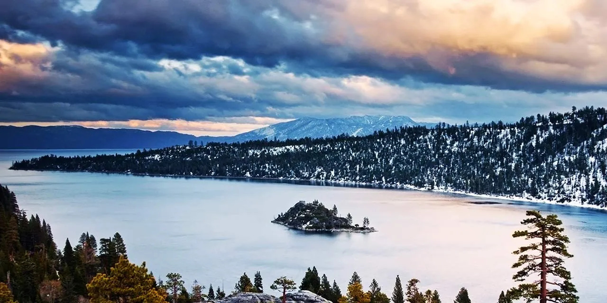
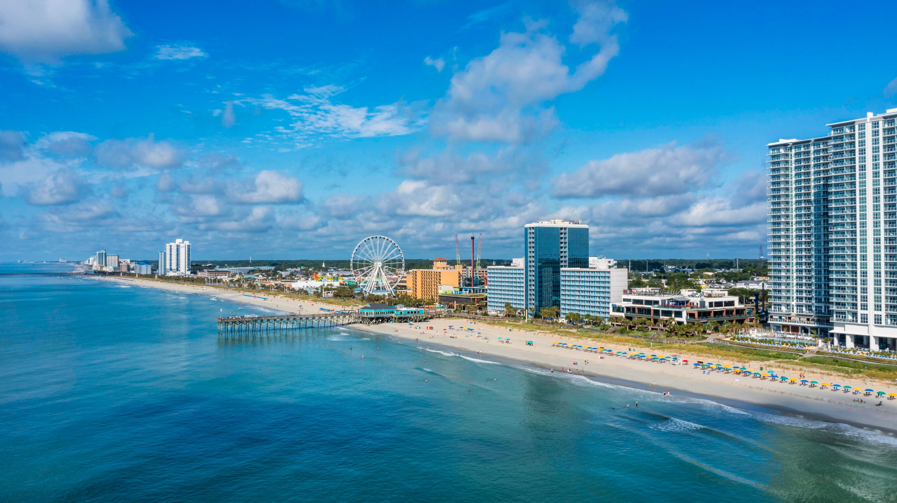
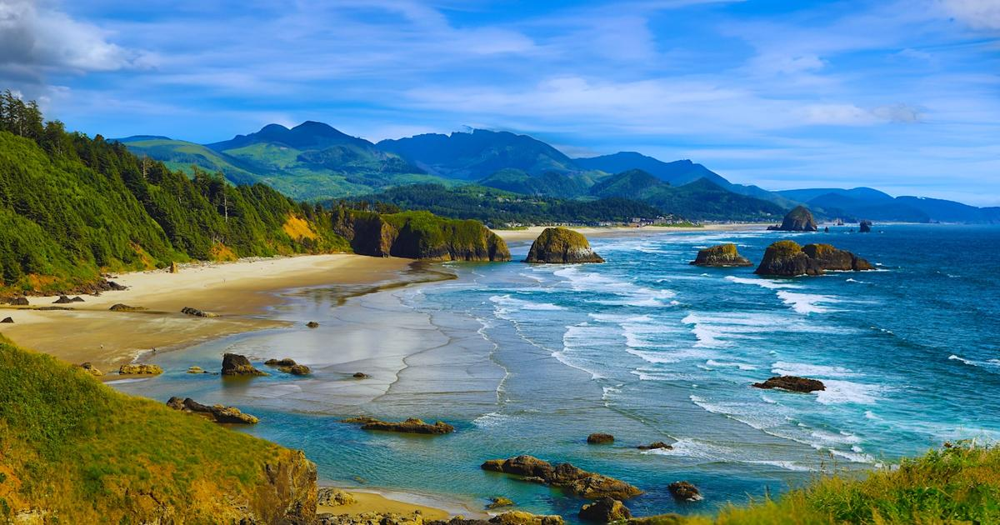

A short list of waterfront places that stand out for views, atmosphere, and simple trip appeal.

Lake Tahoe is known for its incredibly clear blue water and mountain views. It offers a peaceful environment with opportunities for boating, hiking, and relaxing by the shoreline.

Myrtle Beach is a lively coastal destination with a long boardwalk, entertainment options, and plenty of restaurants. It’s great for both relaxing and enjoying activities near the water.

Cannon Beach is known for its iconic rock formations and scenic coastline. It’s quieter than most beaches and is perfect for photography, walking, and enjoying nature.